Runde 4¶
Refactoring¶
Zitat
Refactoring (auch Refaktorierung oder Restrukturierung) bezeichnet in der Software-Entwicklung die manuelle oder automatisierte Strukturverbesserung von Quelltexten unter Beibehaltung des beobachtbaren Programmverhaltens. Dabei sollen die Lesbarkeit, Verständlichkeit, Wartbarkeit und Erweiterbarkeit verbessert werden, mit dem Ziel, den jeweiligen Aufwand für Fehleranalyse und funktionale Erweiterungen deutlich zu senken.
Refactoring ist ein zentraler Bestandteil der Agilen Softwareentwicklung. Dort wird meist von „kontinuierlichem“ Refactoring [1] oder „kompromisslosem“ Refactoring [2] gesprochen. Refactoring ist in der agilen Softwareentwicklung wie Kodieren oder Modultesten ein integraler Bestandteil des Softwareentwicklungsprozesses und nicht auf bestimmte Zeiten bzw. Phasen beschränkt.
Refactoring wird hauptsächlich auf unschöne Stellen im Code (siehe Code-Smell) angewandt. Diese sind z.B. mit Hilfe von schlechten Metrikwerten als solche zu erkennen. Dabei wird der Quelltext eines Computerprogramms umgestaltet, wobei die tatsächliche Programmfunktion unverändert bleiben soll. Die Umgestaltung des Quelltextes erfolgt meist nach folgenden Gesichtspunkten:
- Lesbarkeit
- Übersichtlichkeit
- Verständlichkeit
- Erweiterbarkeit
- Vermeidung von Redundanz
- Testbarkeit
Folgendes sind besonders häufig eingesetzte Refactorings:
- Änderung eines Symbolnamens.
- Verschieben eines Symbols in ein anderes Modul, z. B. eine Methode in eine andere Klasse.
- Aufteilung eines Moduls (z. B. Paket, Klasse, Methode) in mehrere kleinere Module oder Zusammenlegung kleinerer Module zu einem größeren.
- Im weitesten Sinne auch die Umformatierung eines Quelltextes, z. B. mit einem Beautifier.
- Bei geänderten Geschäftsprozessen bei Darstellung mittels der Unified Modeling Language UML kann mittels „Refactoring“ der Programmcode geändert werden. Dadurch wird eine robuste und stabile Systemarchitektur geschaffen, da unübersichtliche Änderungen nicht im Code initiiert werden müssen.
Im weiteren Verlauf wollen wir nun den Quelltext hinsichtlich eines möglichen Refactorings untersuchen.
Aufteilen umfangreicher Methoden¶
Ausgangspunkt unserer Überlegungen ist, dass die Statement-Methode der Klasse Customer um eine html-Ausgabe erweitert werden soll. Das notwendige Verändern der Methode kann deshalb mit weiteren Optimierungen verbunden werden.
Methoden herausnehmen¶
Eine Reduzierung der Komplexität einer Methode besteht häufig daran, logische Teile innerhalb einer Methode zu finden, diese auszulagern und damit die Komplexität der Methode zu verringern.
Aufgabe
Welche Teile des Statement-Methode würden sich dazu anbieten ?
{kind=link}
{kind=link}
{kind=link}
In unserem Beispiel wurde die switch-Anweisung in eine eigene Methode ausgelagert. Wenn korrekte Datentypen bei der Übergabe von Parametern definiert werden, darf diese Codeänderung anschließend keine negativen Auswirkungen auf diese Tests haben.
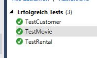Die Codemetriken für diese Methode ändern sich ebenfalls in die positive Richtung.
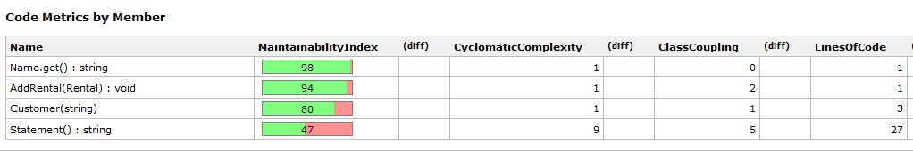 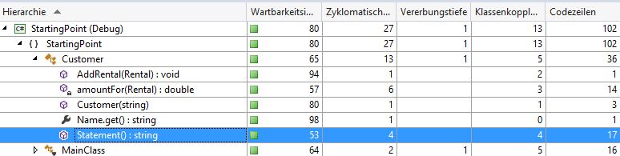Umbenennen¶
Nachdem die Tests keine Fehler liefern, kann die neue Version noch zum Umbenennen von einigen Variablen genommen werden. Moderne IDE’s unterstützen den Entwickler dabei weitgehend und verständliche Namen erhöhen die Nachvollziehbarkeit des Quellcodes.
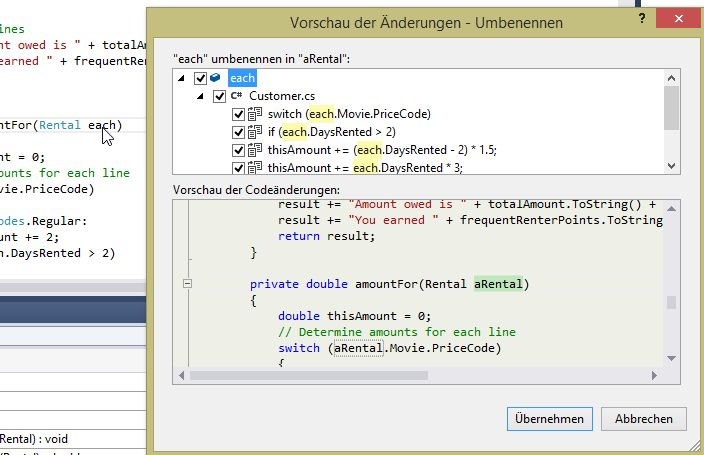Ein Neukompilieren sowie das Ausführen der Tests bestätigt, dass es keine Fehler gegeben hat.
Methoden verschieben¶
Beim Betrachten der eben erstellten Methode amountFor() fällt auf, dass diese Informationen aus der Rental-Klasse benutzt, aber eigentlich überhaupt keine Informationen aus der Customer-Klasse. Es fehlt damit die Kohäsion zwischen Methode und Instanzattributen und ein entsprechendes Metrik-Tool würde hier sicherlich einen schlechten LCOM-Metrik errechnen.
Die Methode wäre deshalb besser in der rental-Klasse aufgehoben. man kopiert deshalb zunächst die Methode in die entsprechende Klasse und passt Sie anschließend wie folgt an.
public double GetCharge()
{
double result = 0;
// Determine amounts for each line
switch (m_Movie.PriceCode)
{
case PriceCodes.Regular:
result += 2;
if (DaysRented > 2)
{
result += (DaysRented - 2) * 1.5;
}
break;
case PriceCodes.NewRelease:
result += DaysRented * 3;
break;
case PriceCodes.Childrens:
result += 1.5;
if (DaysRented > 3)
{
result += (DaysRented - 3) * 1.5;
}
break;
}
return result;
}
In der Klasse Customer ist der Quellcode der amountFor-Methode durch folgende Vereinfachung anzupassen.
private double amountFor(Rental aRental)
{
return aRental.GetCharge();
}
Falls es immer noch fehlerfrei läuft, kann die amountFor-Methode vernachlässigt werden. Die Umleitung auf die Rental-Klasse kann wieder direkt in der Statement()-Methode erfolgen.
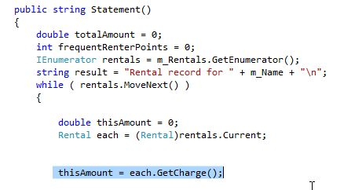Die vorhandenen UnitTests sollten noch immer funktionieren und auch die CodeMetrik sollte keine signifikanten Änderungen erfahren haben.
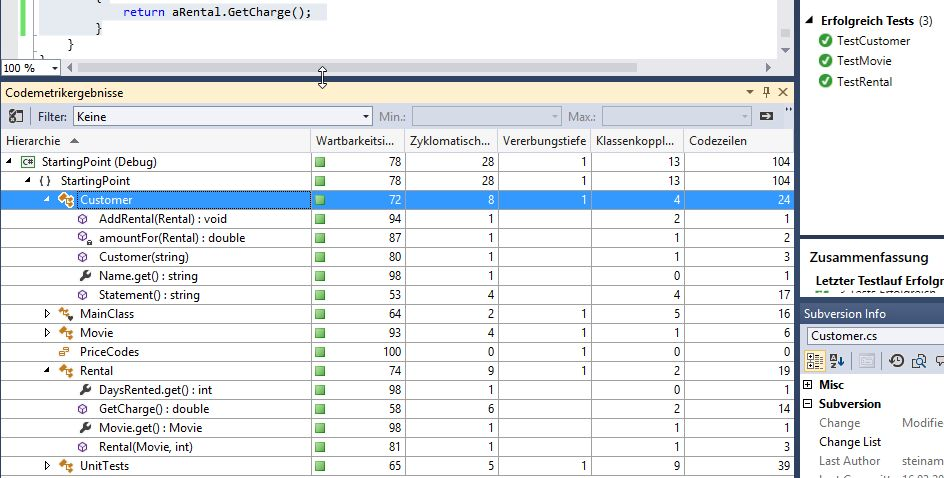Das abschließende Klassendiagramm hat sich vom Ausgangspunkt wie folgt geändert.
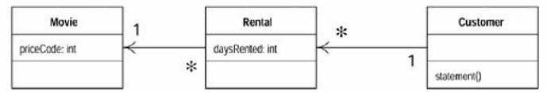 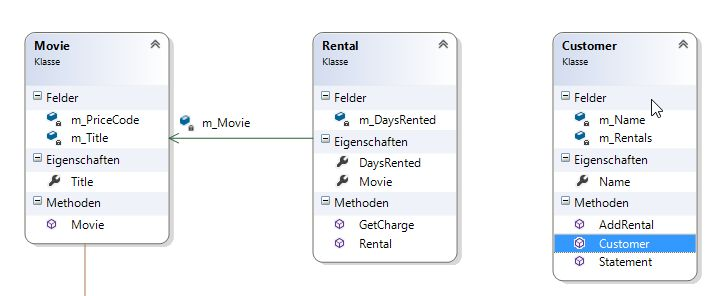UnitTests
Durch die neue öffentliche Methode in Rental müssten für getcharge() neue UnitTests geschrieben werden. Sie können diese unter UnitTest3.cs in ihr Projekt integrieren.
Eliminiere Temp-Variablen¶
Temporäre Variablen sind ein weiteres Indiz für Optimierungen. Sie überleben häufig im Produktivcode und nach einiger Zeit ist man sich deren Notwendigkeit unsicher.
In unserem beispiel kann die Deklaration und Benutzung von thisAmount in der while-Schleife durch each.getCharge() ersetzt werden.
while ( rentals.MoveNext() )
{
Rental each = (Rental)rentals.Current;
// Determine amounts for each line
// Add frequent renter points
frequentRenterPoints++;
// Add bonus for a two-day new-release rental
if ((each.Movie.PriceCode == PriceCodes.NewRelease) && (each.DaysRented > 1))
{
frequentRenterPoints ++;
}
// Show figures for this rental
result += "\t" + each.Movie.Title + "\t" + each.GetCharge().ToString() + "\n";
totalAmount += each.GetCharge();
}
Die Optimierung hinsichtlich der Lesbarkeit wird in diesem Beispiel natürlich durch eine doppelte Berechnung hinterfragbar. Dieser Nachteil wäre aber durch eine Änderung in der Klasse Rental ausgleichbar. Darauf wird später noch eingegangen
Auslagern von Methoden¶
Auch die Rabattpunkte sind ein Kandidat für das Auslagern in eine andere Methode.
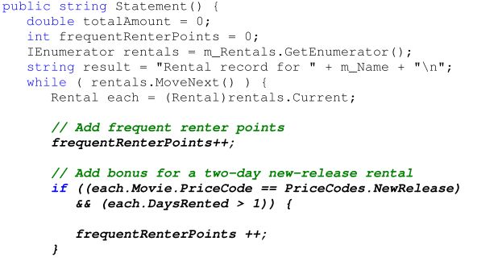Bei der Implementierung der Methode ist zu beachten, dass die frequentrenterPoints-Variable evtl. zweimal erhöht wird. Dies ist in der Methode entsprechend zu implementieren.
class Customer
{
//....
while ( rentals.MoveNext() ) {
Rental each = (Rental)rentals.Current;
frequentRenterPoints += each.GetFrequentRenterPoints();
// Show figures for this rental
class Rental
{
....
public int GetFrequentRenterPoints() {
if (Movie.PriceCode == PriceCodes.NewRelease && DaysRented > 1)
return 2;
else
return 1;
}
Weitere Tests sichern die Funktionalität der ausgelagerten Methode.
[Test]
public void TestNewPublicMethod_RentalGetFrequentRenterPointsNewReleasePrice() {
Rental _RentalSuperman1 = new Rental(new Movie("Superman", PriceCodes.NewRelease),1);
Assert.AreEqual(1, _RentalSuperman1.GetFrequentRenterPoints());
Rental _RentalSuperman3 = new Rental(new Movie("Superman", PriceCodes.NewRelease),3);
Assert.AreEqual(2, _RentalSuperman3.GetFrequentRenterPoints());
}
[Test]
public void TestNewPublicMethod_RentalGetFrequentRenterPointsChildrensPrice() {
Rental _RentalSuperman1 = new Rental(new Movie("Superman", PriceCodes.Childrens),1);
Assert.AreEqual(1, _RentalSuperman1.GetFrequentRenterPoints());
Rental _RentalSuperman3 = new Rental(new Movie("Superman", PriceCodes.Childrens),3);
Assert.AreEqual(1, _RentalSuperman3.GetFrequentRenterPoints());
}
[Test]
public void TestNewPublicMethod_RentalGetFrequentRenterPointsRegularPrice() {
Rental _RentalSuperman1 = new Rental(new Movie("Superman", PriceCodes.Regular),1);
Assert.AreEqual(1, _RentalSuperman1.GetFrequentRenterPoints());
Rental _RentalSuperman3 = new Rental(new Movie("Superman", PriceCodes.Regular),3);
Assert.AreEqual(1, _RentalSuperman3.GetFrequentRenterPoints());
}
Das Klassendiagramm ändert sich entsprechend.
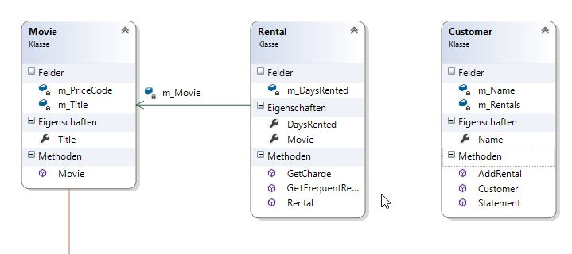Die Metriken für das Projekt haben anschließend folgende Werte:
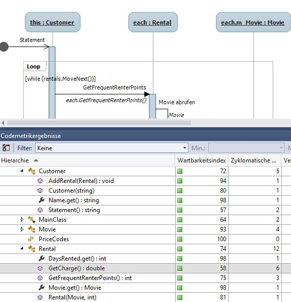Code-Verbesserungen¶
Innerhalb der Statement-Methode kann eine weitere Verbesserung dadurch erreich werden, dass man die Java-Like „enumerator - while“-Schleife durch ein foreach-Konstrukt ersetzt.
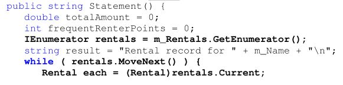 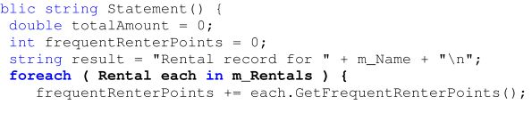Die Statement()-Methode sieht nun wie folgt aus:
public string Statement()
{
double totalAmount = 0;
int frequentRenterPoints = 0;
string result = "Rental record for " + m_Name + "\n";
foreach ( Rental each in m_Rentals )
{
// Determine amounts for each line
// Add frequent renter points
frequentRenterPoints += each.GetFrequentRenterPoints();
// Show figures for this rental
result += "\t" + each.Movie.Title + "\t" + each.GetCharge().ToString() + "\n";
totalAmount += each.GetCharge();
}
// Add footer lines
result += "Amount owed is " + totalAmount.ToString() + "\n";
result += "You earned " + frequentRenterPoints.ToString() + " frequent renter points.";
return result;
}
Temporäre Variablen ersetzen¶
Wie schon weiter oben erwähnt, können temporäre Variablen ein Problem darstellen.
- Sie sind nur nutzbar in der der eigenen Methode
- Keine Wiederverwendbarkeit
In unserem Beispiel bieten sich die Variablen totalAmount sowie frequentRentalPoints zum Refaktorisieren an.
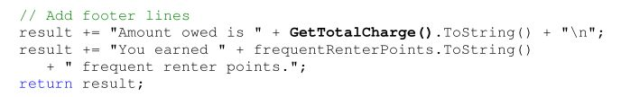Da totalAmount innerhalb einer Schleife errechnet wurde, muss diese Schleifenstruktur innerhalb der Methode getTotalCharge() nachgebildet werden.
private double GetTotalCharge() {
double result = 0;
foreach ( Rental each in m_Rentals ) {
result += each.GetCharge();
}
return result;
}
Die gleiche Vorgehensweise ist für frequentrenterPoints nachzuholen.
Aufgabe
Erstellen Sie eine Methode GetTotalFrequentRenterPoints und führen Sie die Refaktorisierung durch.
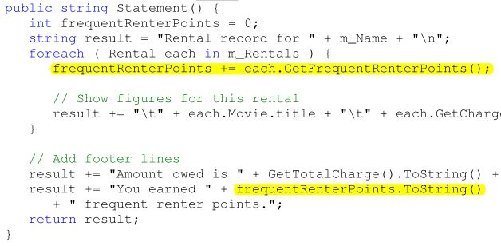Lösung
public string Statement() {
string result = "Rental record for " + m_Name + "\n";
foreach ( Rental each in m_Rentals ) {
// Show figures for this rental
result += "\t" + each.Movie.title + "\t" + each.GetCharge().ToString() + "\n";
}
// Add footer lines
result += "Amount owed is " + GetTotalCharge().ToString() + "\n";
result += "You earned " + GetTotalFrequentRenterPoints().ToString()
+ " frequent renter points.";
return result;
}
private int GetTotalFrequentRenterPoints() {
int result = 0;
foreach ( Rental each in m_Rentals ) {
result += each.GetFrequentRenterPoints();
}
return result;
}
Übersetzen Sie die folgenden Aussagen sinngemäß
It is worth stopping to think a bit about the last refactoring. Most refactorings reduce the amount of code, but this one increases it. That’s because Java 1.1 requires a lot of statements to set up a summing loop. Even a simple summing loop with one line of code per element needs six lines of support around it. It’s an idiom that is obvious to any programmer but is a lot of lines all the same.
The other concern with this refactoring lies in performance. The old code executed the „while“ loop once, the new code executes it three times. A while loop that takes a long time might impair performance. Many programmers would not do this refactoring simply for this reason. But note the words if and might. Until I profile I cannot tell how much time is needed for the loop to calculate or whether the loop is called often enough for it to affect the overall performance of the system.
Don’t worry about this while refactoring. When you optimize you will have to worry about it, but you will then be in a much better position to do something about it, and you will have more options to optimize effectively.
These queries are now available for any code written in the customer class. They can easily be added to the interface of the class should other parts of the system need this information. Without queries like these, other methods have to deal with knowing about the rentals and building the loops. In a complex system, that will lead to much more code to write and maintain.
HTML-Statement¶
Nach all den Refaktoriesierungen ist es nun einfach, eine HTML-Statement-Methode zu schreiben, da Sie viele interne Implementierungen wiederverwenden kann.
public string HTMLStatement()
{
string result = "<H1>Rental record for <EM>" + m_Name + "</EM></H1><P>\n";
foreach (Rental each in m_Rentals)
{
result += each.Movie.title + ": " + each.GetCharge().ToString() + "<BR>\n";
}
// Add footer lines
result += "<P>Amount owed is <EM>" + GetTotalCharge().ToString() + "</EM><P>\n";
result += "You earned <EM>" + GetTotalFrequentRenterPoints().ToString()
+ "</EM> frequent renter points.<P>";
return result;
}
Neue Unit-Tests¶
Die HTML-Statement-Methode maht natürlich auch neue Unit-Tests notwendig.
[Test]
public void TestHTMLstatement()
{
Customer _LiverLips = new Customer("Liver Lips");
_LiverLips.AddRental(new Rental(new Movie("Enforcer", PriceCodes.Childrens), 10));
_LiverLips.AddRental(new Rental(new Movie("Apollo 13", PriceCodes.NewRelease), 3));
_LiverLips.AddRental(new Rental(new Movie("Pulp Fiction", PriceCodes.Regular), 4));
Assert.AreEqual("Liver Lips", _LiverLips.Name);
Assert.AreEqual
("<H1>Rental record for <EM>Liver Lips</EM></H1><P>\nEnforcer: 12<BR>\nApollo 13: "
+ "9<BR>\nPulp Fiction: 5<BR>\n<P>Amount owed is <EM>26</EM><P>\n"
+ "You earned <EM>4</EM> frequent renter points.<P>"
, _LiverLips.HTMLStatement());
_LiverLips.AddRental(new Rental(new Movie("The Good, The Bad, And The Ugly"
, PriceCodes.Childrens), 10));
Assert.AreEqual
("<H1>Rental record for <EM>Liver Lips</EM></H1><P>\nEnforcer: 12<BR>\nApollo 13: "
+ "9<BR>\nPulp Fiction: 5<BR>\nThe Good, The Bad, And The Ugly: 12<BR>\n<P>"
+ "Amount owed is <EM>38</EM><P>\nYou earned <EM>5</EM> frequent renter points.<P>"
, _LiverLips.HTMLStatement());
}
Vergleich vorher/nachher¶
Obwohl natürlich auch in anderen Klassen Veränderungen vorgenommen wurden, ist ein Vergleich der Statement()-Methode zu Beginn und zum jetzigen Zeitpunkt interessant.
Man kann in der Versionsverwaltung durch ein Compare von Head und Revision 1 erreichen.
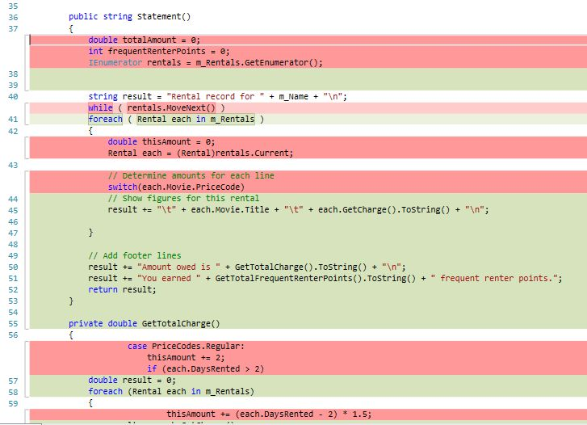 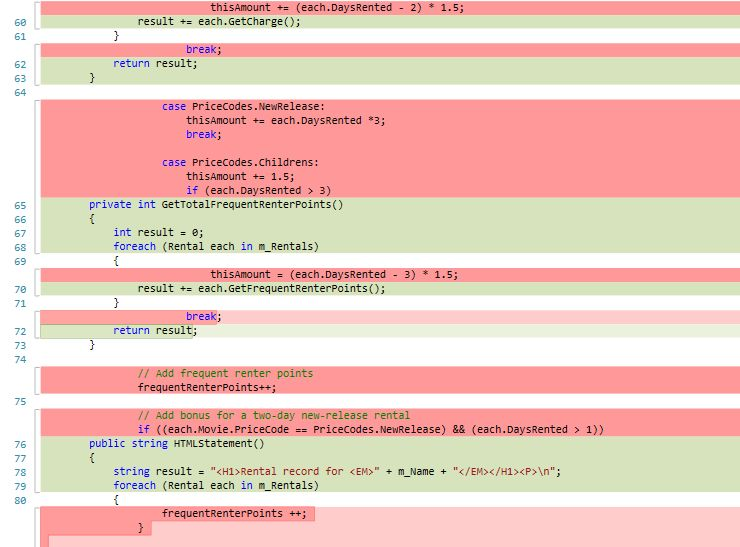 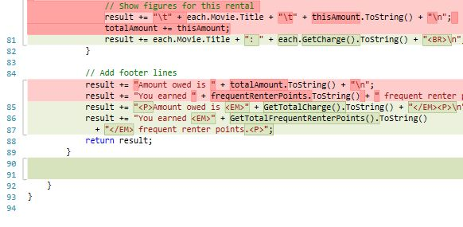